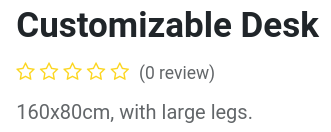
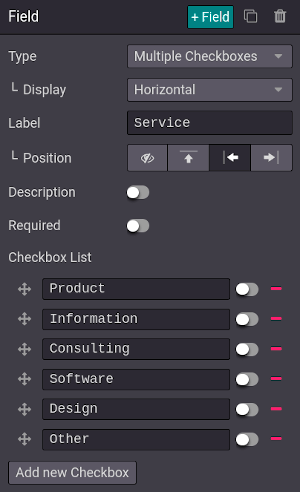
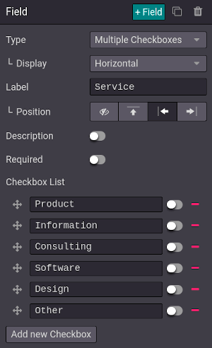

Customer interaction¶
Odoo offers many ways to interact with customers and for customers to interact with your website.
Product reviews¶
Customers can give a rating to your products. This is a great way to promote your products or services since reviews can influence purchase processes. To activate the rating feature, from your shop page, select a product, go to and enable Rating.
Note
Only portal users which purchased the product or service can leave ratings.
Tip
Customer reviews can be hidden by clicking the Visible button next to a published review.
Live chat¶
A chatbot is available and can simulate a human-like conversation with website visitors via text messages in a chat box.
Contact forms¶
Helpdesk¶
Customers may need support after purchasing a product or subscribing to a service. It is possible to create a contact form, which, when fulfilled, automatically creates a new ticket for your support team.

To add a contact form, create a new page () if necessary, and drag and drop a Form block from the Dynamic Content section onto the page. Once placed, click on the form (while in Edit mode), and in the Action field, select Create a Ticket. You can then select to which Helpdesk team the ticket should be assigned.

Contact us¶
A ‘Contact Us’ page makes it easier for customers and prospects to contact your company and get in touch.
To have a ‘Contact Us’ page, create a new page () if necessary, and click on . Then, drag and drop a Form block onto the page. Select the form and define the action to be performed when submitted in the Action field.
When clicking on a field, or when adding a new field (+ Field), you can select its Type. This enables different options, such as Multiple Checkboxes, which customers can use to indicate the services they are interested in, for example.
 
